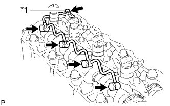
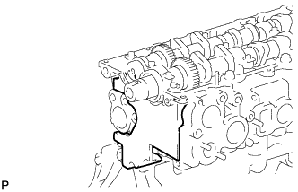
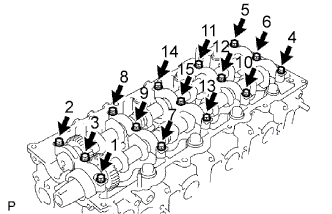
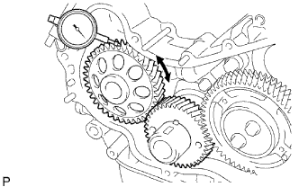
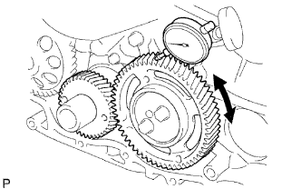
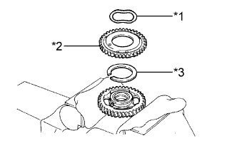
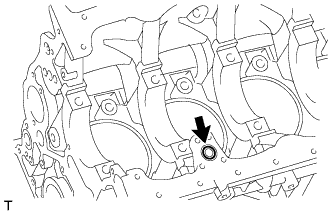
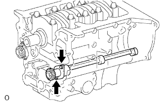

БЛОК ДВИГАТЕЛЯ (для моделей с DPF) > РАЗБОРКА |
| 1. СНИМИТЕ КРЫШКУ МАСЛОНАЛИВНОЙ ГОРЛОВИНЫ В СБОРЕ |
| 2. СНИМИТЕ КРЫШКУ ГОЛОВКИ БЛОКА ЦИЛИНДРОВ В СБОРЕ |
 |
С помощью небольшой отвертки снимите уплотнительное кольцо форсунок в головке блока цилиндров, поддев часть между уплотнительным кольцом и вырезом крышки головки блока цилиндров.
 |
Выверните 10 болтов, отверните 2 гайки и снимите крышку головки блока цилиндров и прокладку крышки головки блока цилиндров.
| 3. СНИМИТЕ ФОРСУНКУ В СБОРЕ |
|  |
Выверните пустотелый соединительный болт-штуцер, 4 полых винта форсунок и снимите 5 прокладок и трубопровод обратного слива топлива.
| *1 | Пустотелый соединительный болт-штуцер |
 |
Выверните 4 болта и снимите 4 шайбы, 4 фиксатора корпуса форсунок № 1 и 4 форсунки.
Снимите кольцевое уплотнение с каждой форсунки.
Снимите 4 седла форсунок с головки блока цилиндров.
| 4. СНИМИТЕ ЗУБЧАТОЕ КОЛЕСО РАСПРЕДВАЛА |
 |
Выверните болт зубчатого колеса распредвала, удерживая распредвал ключом.
Снимите зубчатое колесо распредвала.
| 5. СНИМИТЕ КРЫШКУ РЕМНЯ ГАЗОРАСПРЕДЕЛЕНИЯ № 2 |
 |
Выверните 4 болта и гайки и снимите крышку ремня газораспределения № 2.
| 6. СНИМИТЕ ИЗОЛЯТОР БЛОКА ЦИЛИНДРОВ |
|  |
Снимите изолятор блока цилиндров с головки блока цилиндров.
| 7. СНИМИТЕ РАСПРЕДВАЛ |
 |
Поверните распредвал с помощью ключа таким образом, чтобы шпоночная канавка распредвала была направлена вверх.
| *1 | Шпоночная канавка |
|  |
В несколько приемов равномерно ослабьте 15 болтов крышек подшипников в последовательности, показанной на рисунке.
Выверните 15 болтов крышек подшипников и снимите 5 крышек подшипников, сальник и 2 распредвала.
| 8. СНИМИТЕ ТОЛКАТЕЛЬ КЛАПАНА |
Извлеките толкатели клапанов.
| 9. СНИМИТЕ ГОЛОВКУ БЛОКА ЦИЛИНДРОВ В СБОРЕ |
 |
В несколько приемов равномерно ослабьте 18 болтов головки блока цилиндров в последовательности, показанной на рисунке. Затем выверните 18 болтов головки блока цилиндров и снимите 18 шайб.
Снимите головку блока цилиндров с установочных штифтов в блоке цилиндров и положите головку блока цилиндров на деревянные бруски на верстаке.
| 10. СНИМИТЕ ПРОКЛАДКУ ГОЛОВКИ БЛОКА ЦИЛИНДРОВ |
| 11. СНИМИТЕ НАСОС СИСТЕМЫ ОХЛАЖДЕНИЯ В СБОРЕ |
 |
Выверните 5 болтов, отверните 2 гайки и снимите насос системы охлаждения и прокладку.
| 12. СНИМИТЕ КРЫШКУ ГАЗОРАСПРЕДЕЛИТЕЛЬНОГО МЕХАНИЗМА |
 |
Выверните 14 болтов и отверните 2 гайки.
 |
Подденьте крышку газораспределительного механизма в местах, показанных на рисунке, и снимите ее.
Снимите 3 кольцевых уплотнения с картера газораспределительного механизма.
| 13. СНИМИТЕ ОБРАТНЫЙ МАСЛЯНЫЙ КЛАПАН В СБОРЕ |
С помощью шестигранного ключа на 6 мм выверните болт и снимите обратный масляный клапан с крышки газораспределительного механизма.
| 14. ПРОВЕРЬТЕ ОБРАТНЫЙ МАСЛЯНЫЙ КЛАПАН В СБОРЕ |
Нажмите на шарик обратного масляного клапана и проверьте, не заедает ли он.
| *1 | Шарик |
| 15. СНИМИТЕ ШЕСТЕРНЮ НАСОСА ВЫСОКОГО ДАВЛЕНИЯ |
 |
Закрепите вспомогательную промежуточную шестерню № 2 на промежуточной шестерне № 1 с помощью технологического болта.
Снимите шестерню насоса высокого давления.
| 16. СНИМИТЕ ЗУБЧАТЫЙ ДИСК ДАТЧИКА ПОЛОЖЕНИЯ КОЛЕНЧАТОГО ВАЛА № 1 |
Снимите диск зубчатый диск датчика положения коленчатого вала № 1.
| 17. ПРОВЕРЬТЕ ЗАЗОР МЕЖДУ ВЕДУЩИМ ЗУБЧАТЫМ КОЛЕСОМ КОЛЕНЧАТОГО ВАЛА И ШЕСТЕРНЕЙ МАСЛЯНОГО НАСОСА |
|  |
Индикатором часового типа измерьте боковой зазор.
| 18. ПРОВЕРЬТЕ ЗАЗОР МЕЖДУ ВЕДУЩИМ ЗУБЧАТЫМ КОЛЕСОМ КОЛЕНЧАТОГО ВАЛА И ПРОМЕЖУТОЧНОЙ ШЕСТЕРНЕЙ № 1 |
|  |
Индикатором часового типа измерьте боковой зазор.
| 19. ПРОВЕРЬТЕ ОСЕВОЙ ЗАЗОР ПРОМЕЖУТОЧНОЙ ШЕСТЕРНИ № 1 |
Установите картер газораспределительного механизма, промежуточную шестерню № 1 и зубчатое колесо распредвала.
С помощью индикатора часового типа измерьте осевой зазор.
| 20. СНИМИТЕ ВЕДУЩЕЕ ЗУБЧАТОЕ КОЛЕСО КОЛЕНЧАТОГО ВАЛА |
 |
С помощью SST снимите ведущее зубчатое колесо коленчатого вала.
| 21. ПРОВЕРЬТЕ ЗАЗОР МЕЖДУ ШЕСТЕРНЕЙ НАСОСА ВЫСОКОГО ДАВЛЕНИЯ И ПРОМЕЖУТОЧНОЙ ШЕСТЕРНЕЙ № 1 |
Закрепите нагнетающий топливный насос 2 гайками.
С помощью SST закрепите шестерню насоса высокого давления гайкой.
Индикатором часового типа измерьте боковой зазор.
| 22. СНИМИТЕ УПОРНЫЙ ДИСК ПРОМЕЖУТОЧНОЙ ШЕСТЕРНИ |
 |
Выверните 2 болта и снимите упорный диск промежуточной шестерни.
| 23. СНИМИТЕ ПРОМЕЖУТОЧНУЮ ШЕСТЕРНЮ № 1 |
Снимите промежуточную шестерню № 1 вместе со вспомогательной промежуточной шестерней № 2.
| 24. СНИМИТЕ ВАЛ ПРОМЕЖУТОЧНОЙ ШЕСТЕРНИ № 1 |
Снимите вал промежуточной шестерни № 1.
| 25. ПРОВЕРЬТЕ БОКОВОЙ ЗАЗОР МЕЖДУ УРАВНОВЕШИВАЮЩИМ ВАЛОМ № 1 И ШЕСТЕРНЕЙ МАСЛЯНОГО НАСОСА |
Индикатором часового типа измерьте боковой зазор.
| 26. ПРОВЕРЬТЕ БОКОВОЙ ЗАЗОР МЕЖДУ УРАВНОВЕШИВАЮЩИМ ВАЛОМ № 2 И ШЕСТЕРНЕЙ НАСОСА ВЫСОКОГО ДАВЛЕНИЯ |
 |
Индикатором часового типа измерьте боковой зазор.
С помощью SST отверните гайку и снимите шестерню насоса высокого давления.
Отверните 2 гайки и снимите нагнетающий топливный насос.
Снимите шестерни и картер газораспределительного механизма.
| 27. СНИМИТЕ ВСПОМОГАТЕЛЬНУЮ ПРОМЕЖУТОЧНУЮ ШЕСТЕРНЮ № 1 |
Зажмите промежуточную шестерню № 1 и вспомогательную промежуточную шестерню № 2 в тисках.
С помощью SST поверните вспомогательную промежуточную шестерню № 1 по часовой стрелке и снимите технологический болт.
| *1 | Технологический болт |
 |
С помощью съемника стопорных колец снимите пружинное стопорное кольцо вала.
Снимите пружинную шайбу, вспомогательную промежуточную шестерню № 1 и пружину промежуточной шестерни.
| *1 | Пружинная шайба |
| *2 | Вспомогательная промежуточная шестерня № 1 |
| *3 | Пружина промежуточной шестерни |
| 28. СНИМИТЕ ВСПОМОГАТЕЛЬНУЮ ПРОМЕЖУТОЧНУЮ ШЕСТЕРНЮ № 2 |
Переверните промежуточную шестерню № 1 и зажмите ее в тисках.
С помощью съемника стопорных колец снимите пружинное стопорное кольцо вала.
|  |
Снимите пружинную шайбу, вспомогательную промежуточную шестерню № 2 и пружину промежуточной шестерни.
| *1 | Пружинная шайба |
| *2 | Вспомогательная промежуточная шестерня № 2 |
| *3 | Пружина промежуточной шестерни |
| 29. СНИМИТЕ ПОДДОН КАРТЕРА № 2 В СБОРЕ |
 |
Выверните 11 болтов и отверните 2 гайки.
 |
Вставьте лезвие инструмента для обрезки прокладки поддона картера между масляными поддонами. Срежьте нанесенный герметик и снимите масляный поддон № 2 в сборе.
| 30. СНИМИТЕ МАСЛОПРИЕМНИК С СЕТЧАТЫМ ФИЛЬТРОМ В СБОРЕ |
 |
Отверните 2 гайки и снимите маслоприемник с сетчатым фильтром и прокладку.
| 31. СНИМИТЕ МАСЛЯНЫЙ ПОДДОН В СБОРЕ |
 |
Выверните 22 болта и отверните 2 гайки.
 |
С помощью отвертки отделите масляный поддон, используя ее в качестве рычага в определенных местах между блоком цилиндров и масляным поддоном, как показано на рисунке.
| *A | Левая сторона |
| *B | Правая сторона |
| *a | Подденьте |
|  |
Снимите прокладку.
| 32. СНИМИТЕ КАРТЕР ГАЗОРАСПРЕДЕЛИТЕЛЬНОГО МЕХАНИЗМА В СБОРЕ |
 |
Выверните болт-штуцер и 8 болтов.
Подденьте картер газораспределительного механизма в месте, показанном на рисунке, и снимите картер механизма и прокладку.
 |
Снимите 2 кольцевых уплотнения.
| 33. ПРОВЕРЬТЕ ОСЕВОЙ ЗАЗОР УРАВНОВЕШИВАЮЩЕГО ВАЛА № 1 |
Смещая уравновешивающий вал № 1 в осевом направлении, индикатором часового типа измерьте осевой зазор.
| 34. СНИМИТЕ УРАВНОВЕШИВАЮЩИЙ ВАЛ № 1 В СБОРЕ |
|  |
Выверните 2 болта и снимите уравновешивающий вал.
| 35. СНИМИТЕ ВЕДОМУЮ ШЕСТЕРНЮ УРАВНОВЕШИВАЮЩЕГО ВАЛА № 1 |
Закрепите уравновешивающий вал в тисках между алюминиевыми пластинами.
Выверните болт и снимите ведомую шестерню уравновешивающего вала и упорную шайбу уравновешивающего вала.
| 36. ПРОВЕРЬТЕ ОСЕВОЙ ЗАЗОР УРАВНОВЕШИВАЮЩЕГО ВАЛА № 2 |
Смещая уравновешивающий вал № 2 в осевом направлении, индикатором часового типа измерьте осевой зазор.
| 37. СНИМИТЕ УРАВНОВЕШИВАЮЩИЙ ВАЛ № 2 В СБОРЕ |
Выверните 2 болта и снимите уравновешивающий вал.
| 38. СНИМИТЕ ВЕДОМУЮ ШЕСТЕРНЮ УРАВНОВЕШИВАЮЩЕГО ВАЛА № 2 |
Закрепите уравновешивающий вал в тисках между алюминиевыми пластинами.
Выверните болт и снимите ведомую шестерню уравновешивающего вала и упорную шайбу уравновешивающего вала.
| 39. СНИМИТЕ СТОПОР ЗАДНЕГО САЛЬНИКА КОЛЕНЧАТОГО ВАЛА |
Выверните 5 болтов.
Снимите стопор заднего сальника коленчатого вала, вставив отвертку между ним и блоком цилиндров.
| 40. СНИМИТЕ ПЕРЕДНИЙ САЛЬНИК КОЛЕНЧАТОГО ВАЛА |
Извлеките сальник с помощью отвертки и молотка.
| 41. СНИМИТЕ САЛЬНИК НАГНЕТАЮЩЕГО НАСОСА |
Извлеките сальник с помощью отвертки и молотка.
| 42. СНИМИТЕ ЗАДНИЙ САЛЬНИК КОЛЕНЧАТОГО ВАЛА |
Извлеките сальник с помощью отвертки и молотка.